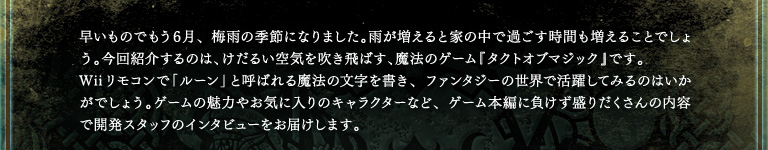
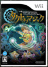

N.O.M Nintendo Online Magazine No.131 June 2009

Contents
1.魔法＋リアルタイムストラテジー
2.数々の魔法を使いこなす
3.お題は「王道」
4.個性的なキャラクターたち
5.ニンテンドーWi-Fiコネクション
6.対戦のコツ
7.読者の皆様へ
Wiiソフト『タクトオブマジック』発売日：2009年5月21日 希望小売価格：5,800円（税込）
公式ホームページはこちら

『タクトオブマジック』：© 2009 Nintendo / TAITO